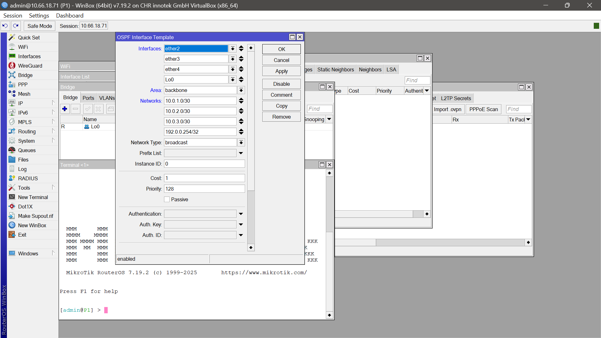

Implémentation d'une Architecture IP/MPLS Opérateur
Découvrez ce projet technique approfondi sur la conception et le déploiement d'une architecture IP/MPLS résiliente et haute performance au sein du réseau d'Orange RDC. Ce projet exploite la puissance des Cloud Core Routers (CCR) MikroTik sous RouterOS v7 pour optimiser le backbone, l'ingénierie de trafic et la distribution des services VPN B2B.
Conception et Déploiement d'Architecture IP/MPLS avec MikroTik
Contexte et Objectifs
Face à la croissance exponentielle du trafic de données et à la demande croissante de services à valeur ajoutée (VPN d'entreprise haut débit, interconnexion de sites géographiquement distants, segmentation réseau avancée et haute disponibilité), Orange RDC a modernisé son infrastructure en adoptant une architecture IP/MPLS robuste. Cette transition s'appuie sur la puissance et l'optimisation des équipements MikroTik de nouvelle génération sous RouterOS v7.
Les objectifs principaux de cette initiative technique visaient à structurer le réseau de transport de l'opérateur :
- Modernisation du backbone IP : Passage d'un routage IP traditionnel à un cœur de réseau IP/MPLS de pointe pour séparer l'underlay de l'overlay et accélérer le transfert des paquets.
- Déploiement de services VPN B2B unifiés : Fourniture de liaisons de niveau 2 transparentes (VPLS) et de niveau 3 étanches (VRF / L3VPN) pour les grandes entreprises, banques et institutions.
- Optimisation des performances de commutation : Exploitation du déchargement matériel (L3 Hardware Offloading) sur les routeurs de cœur pour atteindre des débits linéaires de niveau opérateur.
- Résilience et convergence rapide : Mise en place d'une topologie maillée combinant OSPF, LDP et MP-BGP pour garantir une bascule quasi instantanée en cas de rupture de lien.
Architecture IP/MPLS : Fondations Techniques et Rôles des Nœuds
L'architecture IP/MPLS repose sur une distinction rigoureuse des rôles des routeurs au sein du réseau de l'opérateur. Contrairement au routage IP classique où chaque routeur analyse l'en-tête complet, le réseau MPLS segmente les responsabilités :
- Routeurs P (Provider Core) : Situés au cœur du réseau, leur unique fonction est d'effectuer le Label Swapping (commutation d'étiquettes) à la vitesse de la ligne. Sur les CCR2216, cette tâche est déléguée au switch chip via le L3 Hardware Offloading, garantissant un transfert à 100 Gbps sans impacter le CPU.
- Routeurs PE (Provider Edge) : Placés à la frontière entre le cœur MPLS et les clients ou POPs régionaux. Ils gèrent l'injection et le retrait des labels, les tables de routage virtuelles (VRF), ainsi que le protocole MP-BGP pour la distribution des VPNs.
- Routeurs CE (Customer Edge / Accès) : Déployés chez le client final ou en bordure d'accès (ex: RB5009), ils assurent la terminaison des circuits L2VPN/VPLS ou l'échange des routes avec le routeur PE de l'opérateur.
Le Défi : Scalabilité et Performance du Backbone
L'expansion des activités d'Orange RDC nécessitait une architecture capable d'absorber un trafic de données massif tout en garantissant une isolation stricte des flux d'entreprises. Le défi consistait à concevoir un réseau capable de faire transiter simultanément de la voix, de la vidéo et des données critiques inter-agences sans dégradation de la latence, tout en maîtrisant les coûts d'infrastructure.
La Solution : L'Écosystème MikroTik CCR sous RouterOS v7
L'utilisation des routeurs haute performance MikroTik (CCR2216 et CCR2116) couplée aux fonctionnalités natives de RouterOS v7 a permis de bâtir un réseau MPLS de classe opérateur. La prise en charge native du déchargement matériel L3, des piles OSPF/LDP stables et du multi-threading BGP a offert une solution à la fois extrêmement puissante et économiquement viable pour relier les hubs régionaux (Goma, Beni, Bukavu) au datacenter central.
Équipements MikroTik Sélectionnés et Leur Rôle Stratégique
Chaque équipement MikroTik a été positionné de manière chirurgicale dans la topologie réseau d'Orange RDC :
Cœur de Réseau (P) et Agrégation (PE)
- CCR2216-1G-12XS-2XQ : Flagship 100G de MikroTik. Équipé d'un CPU 16 cœurs et d'un switch chip Marvell avec L3 Hardware Offloading, il sert de routeur de cœur P principal pour la commutation de labels à très haute vitesse et la gestion des tables BGP Full Feed.
- CCR2116-12G-4S+ : Routeur PE par excellence. Avec ses 16 cœurs et ses 16 Go de RAM, il absorbe sans faillir les multiples instances VRF et le traitement intensif des routes BGP/MPLS pour les clients grands comptes.
- CCR2004-1G-12S+2XS : Déployé dans les POPs régionaux (ex: Bukavu ou points de concentration) pour assurer l'interconnexion 10G/25G et alimenter le backbone MPLS en trafic aggrégé.
Accès B2B et Terminaison Client (CE)
- MikroTik RB5009UG+S+IN : Installé chez les clients entreprise majeurs (banques, organisations) en tant que routeur CE managé. Son processeur ARM quad-core et son port 10G SFP+ permettent d'encapsuler et de décapsuler les tunnels VPLS/L3VPN de bout en bout avec une efficacité redoutable.
- Protocoles et Services Délivrés : Établissement des tunnels VPLS pour étendre les réseaux locaux virtuels (Layer 2) entre les agences, et configuration de VRF sécurisées pour isoler le trafic IP des différentes entreprises (L3VPN).
Déploiement et Configuration : Commandes Clés RouterOS v7
L'implémentation pratique de l'architecture MPLS chez l'opérateur repose sur des scripts de configuration normalisés via la CLI de RouterOS v7.
1. Adressage Loopback & Underlay OSPF
-
Création de l'interface Loopback (identifiant unique du routeur) :
/interface bridge add name=loopback0
/ip address add address=10.255.255.1/32 interface=loopback0 -
Activation d'OSPFv2 pour propager les Loopbacks dans le backbone :
/routing ospf area add name=backbone area-id=0.0.0.0
/routing ospf interface-template add area=backbone networks=10.255.255.0/24,192.168.0.0/16
2. Activation MPLS et Distribution LDP
-
Activation globale de LDP avec la Loopback comme transport-address :
/mpls ldp set enabled=yes transport-address=10.255.255.1 -
Association de LDP aux interfaces physiques de transit :
/mpls ldp interface add interface=ether1 enabled=yes
/mpls ldp interface add interface=ether2 enabled=yes
3. Création du Service VPLS (Layer 2 VPN)
-
Configuration du tunnel VPLS point-à-point vers le routeur PE distant :
/interface vpls add name=vpls-client-orange \
remote-peer=10.255.255.3 \
vpls-id=100:100 \
comment="Liaison L2 Inter-Agences Corporate" -
Bridge local combinant le port client et le tunnel VPLS :
/interface bridge add name=br-client
/interface bridge port add bridge=br-client interface=ether5
/interface bridge port add bridge=br-client interface=vpls-client-orange
4. Isolation VRF et MP-BGP (L3VPN)
-
Création d'une instance VRF pour un client B2B spécifique :
/ip vrf add name=CorporateVPN routing-mark=Corp_VRF -
Association de l'interface client à la table VRF :
/ip route vrf add interface=ether4-client routing-mark=Corp_VRF
Scénario Opérationnel en RDC : Le Hub du Nord-Kivu
Dans le cadre des opérations régionales de l'opérateur dans l'est de la RDC (reliant Goma, Bukavu et Beni), l'architecture MPLS permet d'assurer une continuité de service transparente :
| Nœud / Site | Équipement MikroTik | Rôle et Fonction IP/MPLS |
|---|---|---|
| Hub Central Goma | CCR2116-12G-4S+ / CCR2216 | Nœud PE/P principal. Gère l'agrégation 10G/25G, les tables BGP globales et la coordination des VRF pour l'ensemble de la province. |
| POP Régional Bukavu | CCR2004-1G-12S+2XS | Routeur PE intermédiaire assurant la collecte du trafic local et son injection dans le backbone MPLS vers Goma. |
| Agences et Sites B2B (Beni, etc.) | RB5009UG+S+IN | Routeur CE distant connectant les clients professionnels via des tunnels VPLS ou L3VPN sécurisés et managés par l'opérateur. |
Conclusion
L'intégration des routeurs de la gamme CCR MikroTik et l'exploitation de RouterOS v7 ont permis d'ériger une architecture IP/MPLS hautement performante et économique pour Orange RDC. En séparant efficacement le transport sous-jacent (OSPF/LDP) des services virtuels clients (VPLS/L3VPN), l'opérateur garantit une évolutivité maximale, une sécurité de niveau industriel et une qualité de service irréprochable pour ses clients professionnels sur l'ensemble de ses zones de déploiement.
Galerie du Projet IP/MPLS
Aperçu visuel des équipements et des interfaces de configuration du réseau opérateur.
